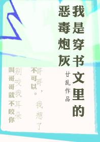

Luo Shuyu fue señalado por el decreto imperial del emperador al tercer príncipe Li Mingjin, que tenía una personalidad siniestra y paranoica. Los dos habían estado casados durante tres años. Li Mingjin siempre lo trató sin palabras y con frialdad.
En un accidente, los dos rodearon la habitación y Luo Shuyu quedó embarazada por accidente. Después de dar a luz a un hijo, Li Mingjin fue encarcelado por colaborar con el enemigo y condenado a decapitación. Su hijo de un mes estaba agonizando y también recibió una copa de vino envenenado.
Inesperadamente, Li Mingjin escapó de la prisión, lo envió desesperadamente a él y a su hijo fuera de la ciudad y murió después de bloquearles las flechas. Nadie de la familia sobrevivió.
Luo Shuyu solo se dio cuenta después de su muerte de que tenía un papel secundario en la novela "Después de transmigrar a un libro, cuatro hermanos mayores luchan por casarse conmigo". La prima del campo fue la protagonista del libro. Él era del mundo futuro y llevaba consigo el dedo de oro para poder relacionarse con los llamados hombres grandes del libro hasta llegar a una posición alta, y finalmente se reunió con el cuarto príncipe que apoyaba y se convirtió en el primero de Wu. reina masculina.
Él y Li Mingjin fueron los villanos en la etapa inicial y fueron los obstáculos en el camino del ascenso del protagonista masculino. Si quisiera que murieran, morirían.
Luo Shuyu se despertó y regresó al día en que llegó el decreto de que él y Li Mingjin se casarían. Tres días después, el hombre que vivió y murió con él apareció frente a él y vio que todavía estaba vivo, joven y guapo. Le lloró a Li Mingjin. Li Mingjin, de 18 años, se levantó las mangas para secarse las lágrimas y dijo con tristeza: "No llores". Aunque un poco feroces, sus movimientos fueron extremadamente suaves.